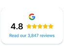
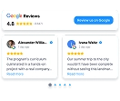
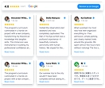

Template preview
THE COMPACT INTRODUCTION
Badge
A small reputation cue when the page has limited space.
Consider it for
Explore Badge A short landing page or a section near your contact details.
THE WEBSITE INTEGRATION GUIDE
Put your customer feedback where the next customer is deciding.
A practical resource for business owners, agencies, and developers. Choose a layout, get your Widget House embed, and add it to the site you’re building.
For landing pages, business websites, and agency projects.
A BETTER PLACE FOR YOUR REVIEWS
Your work.
Your customers’ words.
A little proof.
At the right moment.

Bring the reviews you already have
into the website you’re creating.
One clear workflow.
Choose your layoutGet your embedAdd it to your siteCheck the live page01 / GET IT ON THE PAGE
Widget House connects a Google Business Profile to a customizable review widget. Your generated installation code is the starting point for the integration.
Open the Google Reviews widget and select the Google Business Profile you want to use. Confirm the business and location before continuing.
Choose Badge, Slider, Carousel, or Grid. Adjust the design in Widget House to suit your page. Give long reviews enough space to remain readable.
Publish the widget, open Install, and copy the generated code. The official code guide walks through this step.
Add that code using your site’s supported embed method. Publish your changes and check the actual page on a phone and a desktop, including navigation back to the page.
02 / FIND THE RIGHT SHAPE
Start with the role of the section, then choose the format. These are placement suggestions; preview your own content before publishing.
THE COMPACT INTRODUCTION
A small reputation cue when the page has limited space.
A short landing page or a section near your contact details.
A FOCUSED REVIEW MOMENT
Give individual customer experiences their own space.
A service page with a focused story and a clear next step.

Template previewA BROWSEABLE REVIEW SECTION
Introduce a selection of customer feedback in a horizontal section.
A homepage where visitors are exploring your business.

Template previewROOM TO READ MORE
Give customer feedback a substantial section of the page.
A dedicated reviews page or a longer service landing page.
Widget House template previews with sample content. Connect your own business to display its reviews.
03 / BUILDING WITH AI?
Use this prompt in Codex, Claude Code, or ChatGPT when working on a website. Supply your generated installation code alongside it.
Use the prompt with your existing Widget House embed. Your assistant needs access to the project to edit and test the integration.
Read the repository guideAdd my existing Widget House Google Reviews widget to this website. I will provide the installation code generated in my Widget House account and the page where it should appear. Inspect the project first. Follow its framework and script-loading conventions. Preserve the supplied widget ID, URLs, and configuration. Do not invent an embed, reviews, ratings, API, or account connection. Use a semantic reviews section that fits the page. Avoid duplicate initialization. For React or Next.js, check client-side loading and behavior after route changes. Verify mobile layout, script loading, keyboard access, and the visible result. Tell me what you checked and what still needs a live-site test. Ask before publishing changes.
Copy the prompt, then add your own installation code.
Use the exact code from Widget House in the intended section. Check that your host permits any script or iframe the generated code contains. Confirm the result on the deployed page.
A raw HTML snippet is not automatically a reusable React component. Adapt it to the framework’s supported loading method and verify initial load, route changes, and remounts.
Confirm that your builder and plan allow the generated embed. Editor previews can behave differently from published pages. Follow the platform’s current installation guidance.
04 / BEFORE YOU SHIP
For a dentist, a home service business, or a local agency client, reviews should support the decision the page asks visitors to make.
Try a review section after the service explanation and before the contact or booking action. Keep the main page useful even when a third-party embed cannot load.
Open the installation guideMatch the displayed source to the company this page represents.
Check long names, long reviews, spacing, and horizontal overflow.
Reload the page, leave it, and come back. Look for duplicate widgets.
Keep the contact, booking, or inquiry action easy to find.
If the embed is blocked, the page should still explain your service and how to reach you.
A FEW PRACTICAL ANSWERS
Need help with your generated code?
Visit the Widget House Help Center
It is an embedded website component that displays reviews from a connected Google Business Profile. Widget House provides the editor and installation code; you place that code on your website.
You can use Widget House’s generated embed instead of implementing the review display yourself. You still need to choose its placement and follow your website’s embedding requirements. A developer may be needed for a custom framework or a site with strict script policies.
Copy the setup prompt and supply the installation code generated in your Widget House account. Give your assistant access to the website project and the tools it needs to edit and preview the page, then ask it to verify the integration.
Check that the full installation code was saved, the widget was published, and the hosting platform allows its scripts or frames. Test the published page as well as the editor. For a custom app, inspect browser errors and check whether navigation prevents initialization. Contact Widget House support if the generated code still fails.
The images here demonstrate template appearance. Connect your own business in Widget House and use its generated widget for your site. Do not copy sample reviews, names, or ratings into your business’s testimonial section.
Document the account owner, connected business, widget placement, configuration, and installation method. Include a screenshot of the verified page and notes on how to edit the widget. Keep passwords and private account details out of public repositories.
READY FOR YOUR NEXT BUILD
Create and manage your widget on Widget House.
Use this guide to bring it into your website.